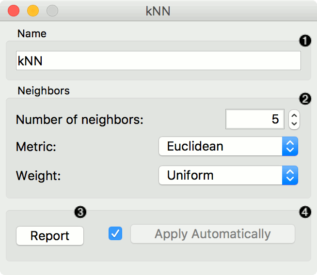
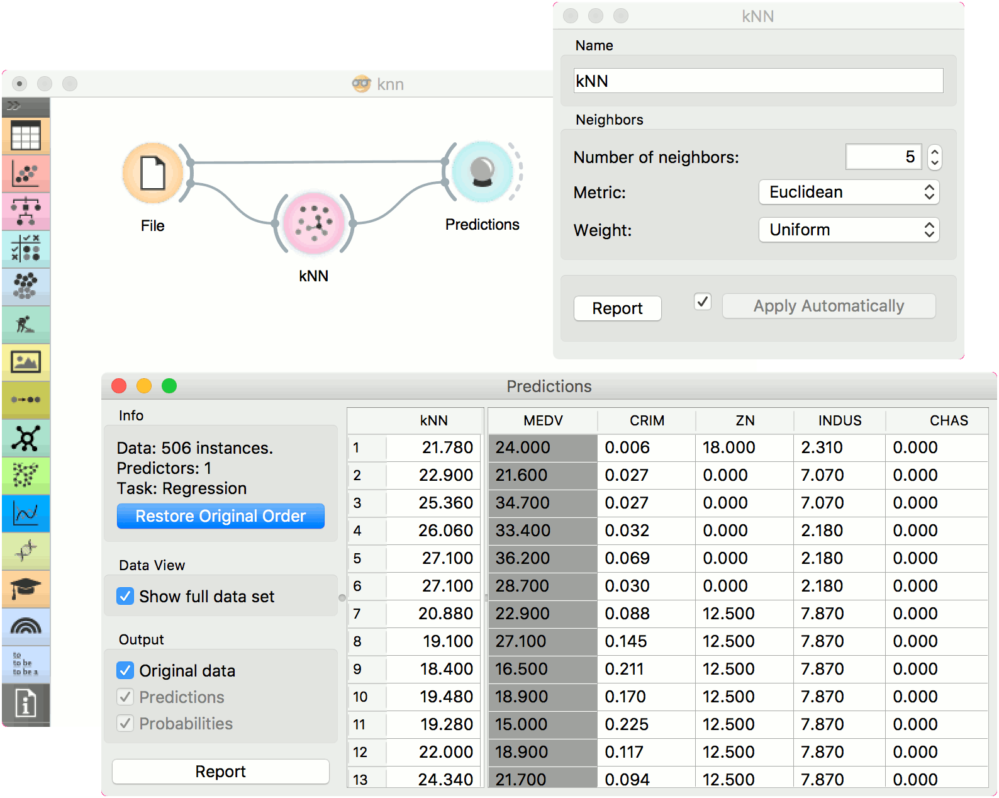

kNN
Predict according to the nearest training instances.
Inputs
- Data: input dataset
- Preprocessor: preprocessing method(s)
Outputs
- Learner: kNN learning algorithm
- Model: trained model
The kNN widget uses the kNN algorithm that searches for k closest training examples in feature space and uses their average as prediction.

- A name under which it will appear in other widgets. The default name is “kNN”.
- Set the number of nearest neighbors, the distance parameter (metric) and weights as model criteria.
- Metric can be:
- Euclidean (”straight line”, distance between two points)
- Manhattan (sum of absolute differences of all attributes)
- Maximal (greatest of absolute differences between attributes)
- Mahalanobis (distance between point and distribution).
- The Weights you can use are:
- Uniform: all points in each neighborhood are weighted equally.
- Distance: closer neighbors of a query point have a greater influence than the neighbors further away.
- Metric can be:
- Produce a report.
- When you change one or more settings, you need to click Apply, which will put a new learner on the output and, if the training examples are given, construct a new model and output it as well. Changes can also be applied automatically by clicking the box on the left side of the Apply button.
Preprocessing
kNN uses default preprocessing when no other preprocessors are given. It executes them in the following order:
- removes instances with unknown target values
- continuizes categorical variables (with one-hot-encoding)
- removes empty columns
- imputes missing values with mean values
- normalizes the data by centering to mean and scaling to standard deviation of 1
To remove default preprocessing, connect an empty Preprocess widget to the learner.
Examples
The first example is a classification task on iris dataset. We compare the results of k-Nearest neighbors with the default model Constant, which always predicts the majority class.

The second example is a regression task. This workflow shows how to use the Learner output. For the purpose of this example, we used the housing dataset. We input the kNN prediction model into Predictions and observe the predicted values.
